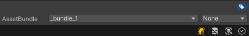
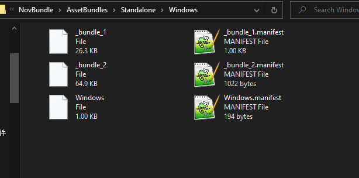
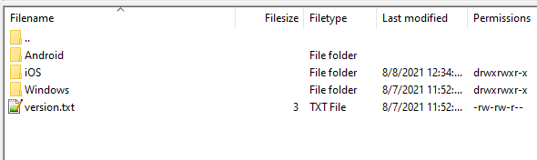
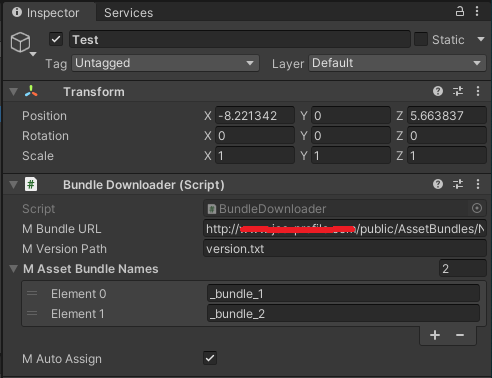
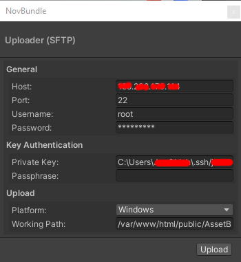

NovBundle
NovBundle is a abstraction layer built on top of Asset Bundles system from Unity Engine. This plugin focuses on simplifying the Asset Bundles workflow so the user would not have to know too much details about the system itself.
✒️ Rationale
This proprietary software is made when I worked under NOVABY,
in order to attempt to resolve certain issues from the upstream Asset Bundles
system. Thankfully, they have granted us permission to release this tool and
sell it to the public on Aug 29, 2021, so here's a big thank you to them! ♥️
🔨 How to use?
There are major three parts for you to master this package. Three parts including
Creation, Upload, Call API. The following instructions would help you get
through the basic usage of each parts.
🔍 How to create Asset Bundles?
1. Create Asset Bundle
Asset Bundles are generated by platforms, hence you would have multiple folders
organized by platforms. First select a asset from the Project window then
create a new Asset Bundle under the Inspector window.

P.S. Here we created a asset bundle named _bundle_1
2. Build Asset Bundle for target platform
Then navigate to your menu bar NovBundle -> Build -> Target Platform, you should be prompt to select your output path. The following is what the outputted result should look like.

P.S. You can export multiple platform but make sure you have organized in platform folder
🔍 Upload to server
1. Upload Asset Bundles files
In order to use these files, we need to upload our exported files to a server. You can use FTP client like FileZilla or other alternatives to do so.
2. Upload version.txt file
You would need to create a text file for Asset Bundles caching system. Here I
have created a text file name version.text with the content of 1.
The text file content,
1
P.S. Make sure the number should only be an unsign integer, hence should not be number lower than 0!

🔍 Download and use the Asset from the bundle
1. Attach component BundleDownloader
Drag and drop the script BundleDownloader to any GameObject in the scene, so
it would start function. Make sure you fill in the variable Bundle URL with
your Asset Bundles url.

For more information, see section Testing.
2. Access asset from script
Once you have done the above instructions, you are ready to use the asset from your Assets Bundle. The following code is a simple example for you to use the asset from the asset bundle you have created.
using NovBundle;
...
BundleDownloader bundleDownloader = ...; // Assign bundle downloader here!
bundleDownloader.BundleAsset(
"_bundle_1", // Name of the bundle
"assets/_project/prefabs/sphere.prefab", (asset) => // Target asset, and callback
{
// Instantiate the prefab to scene
Instantiate(asset, new Vector3(10, 0, 10), Quaternion.identity);
});
🎉 Done!
💾 Uploader (SFTP)
After version 0.2.1, you can now upload the asset bundles over the graphical
user interface by using NovBundle -> Upload window.

🖥️ Batch Mode
You can build Asset Bundles by using Unity's batch mode.
| Method | Arguments | Details |
|---|---|---|
NovBundle.BatchMode.BuildBundle | _platform, _savePath | Build target asset bundles to save path. |
NovBundle.BatchMode.Upload | _platform, _savePath, _host, _port, _username, _password, _privateKey, _passphrase, _workingPath, _versionFile, _version | Upload the asset bundles to the server through SFTP. |
| Command | Optional | Details |
|---|---|---|
_platform | ❌ | Platform asset bundles to build. |
_savePath | ❌ | Where to save the asset bundles. |
_host | ❌ | Host name for SFTP. |
_port | ✔ | Optional port number. (Default to 22) |
_username | ❌ | Username for login. |
_password | ❌ | Password for login. |
_privateKey | ❌ | Path points to your private key. |
_passphrase | ✔ | Passphrase for your private key. |
_workingPath | ❌ | Target path from your server. |
_versionFile | ✔ | Version text file. (Default to version.txt) |
_version | ✔ | Version number apply to version text file. (Default to 1) |
For example,
$UNITY_PATH -batchmode -quit -projectPath "." -executeMethod NovBundle.BatchMode.BuildBundle _platform "Windows" _savePath "."
The $UNITY_PATH is the path to Unity executable hence it depends on variant OS.
On macOS,
/Applications/Unity/Unity.app/Contents/MacOS/Unity
On Windows,
"C:\Program Files\Unity\Editor\Unity.exe"
For more information, see Command line arguments.
📝 Testing
Methods 1. Test it on your server
For exampl,e http://www.yourwebsite.com/example/scenes.assetbundle
Methods 2. Test it with file url
For exampl,e file://C:/example/scenes.assetbundle